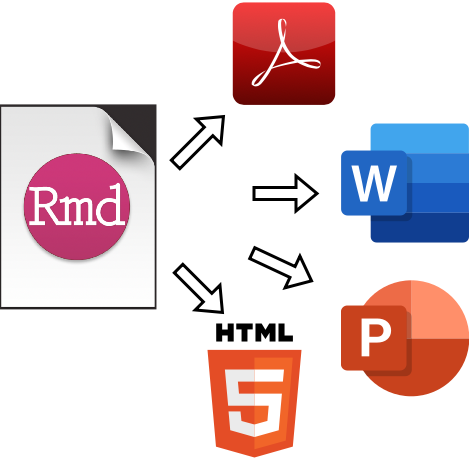

The Posit.Cloud workspace is available here.
This training is delivered in two-parts: Data Management & R Markdown, and an introduction to Shiny apps.
Data Management & R Markdown covers an
introduction to data management in RStudio, common data objects in R,
the basics of Markdown and knitr, table outputs
(tibble, kable and gtsummary),
graphics (ggplot2). The materials also cover importing and
caching data, and rendering M Markdown files into various outputs.
Shiny covers an introduction to UI layouts, reactivity (inputs, expressions, and outputs), and deployment. Additional example applications are available on the Posit.Cloud project.
Using the IDE
Importing SAS files
Importing multiple files
Using parameters
Atomic vectors
S3 vectors
Lists
data.frames and tibbles
Why use R Markdown?
Metadata (YAML)
Text (human readable)
Code (machine readable)
Standard static outputs (tibble &
kable)
Interactive tables (paged)
Table packages (gtsummary)
Introduction to ggplot2
Layers (data, aesthetics, and geoms)
Global vs. local mapping
Setting vs. mapping aesthetics
Facets
ui
server
run
Layout
Reactivity
UI inputs & outputs
Accessing inputs & outputs
render*_() functions
Reactive expressions
